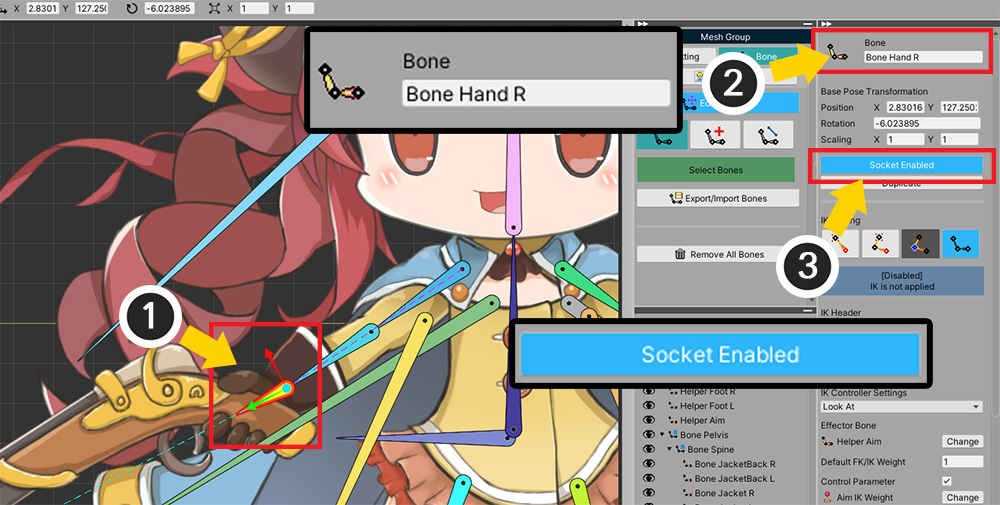
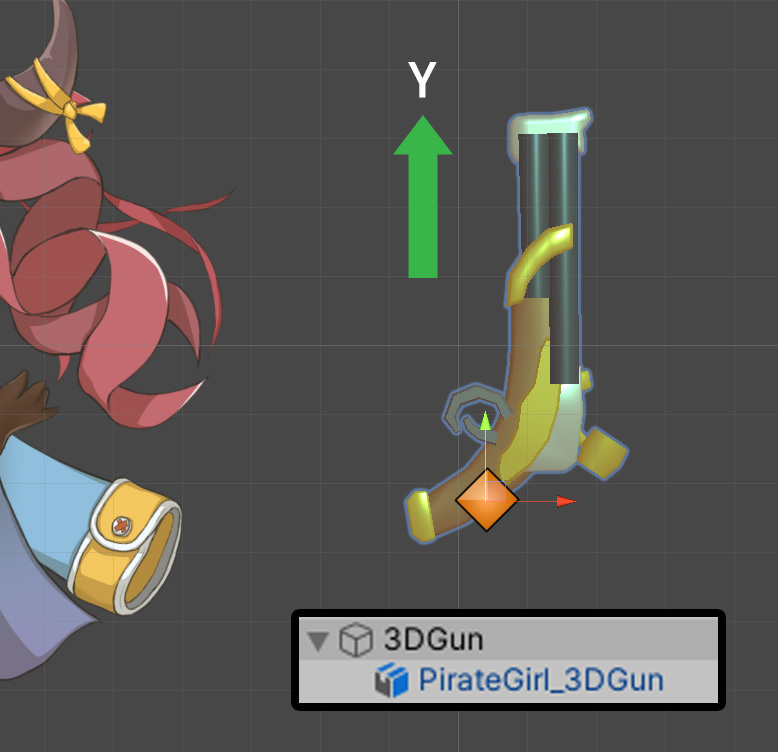
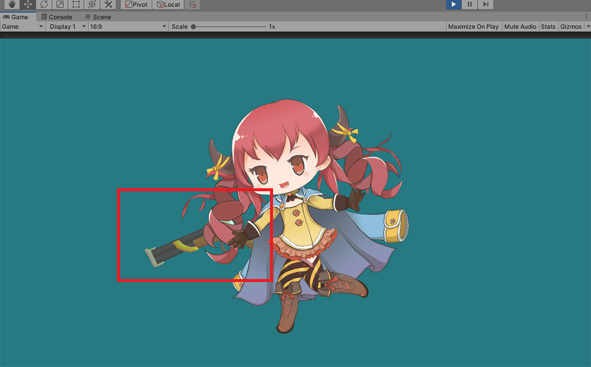
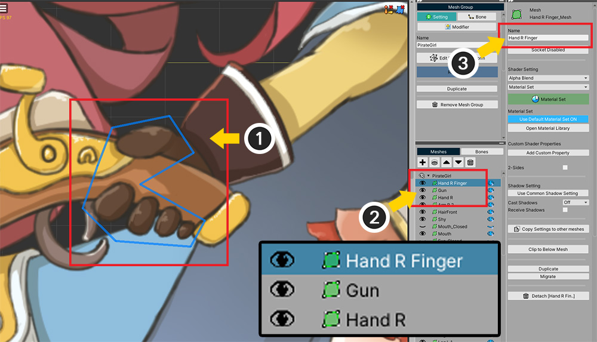
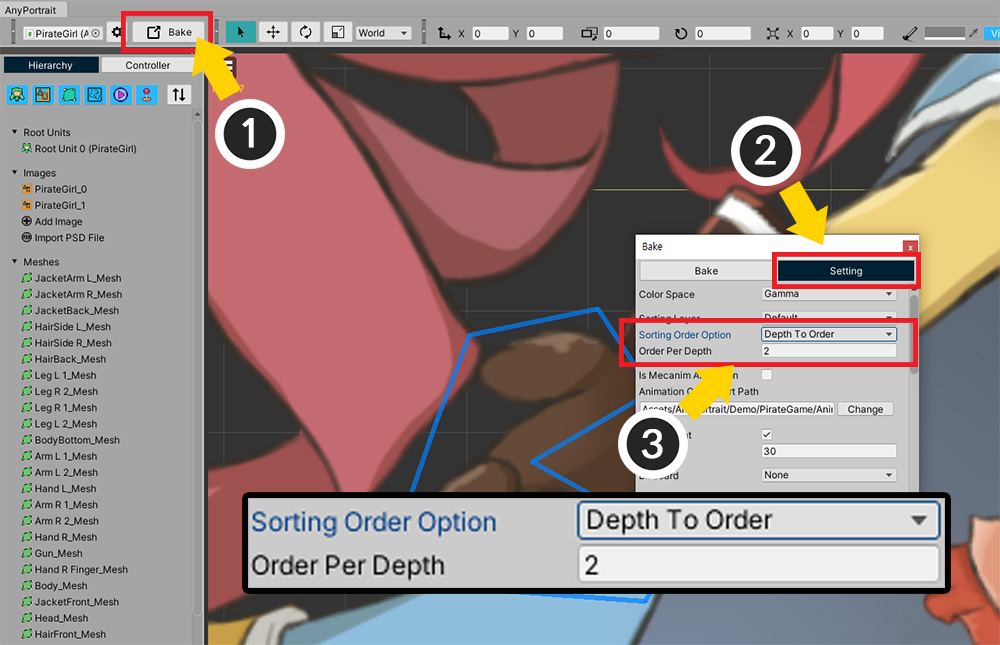
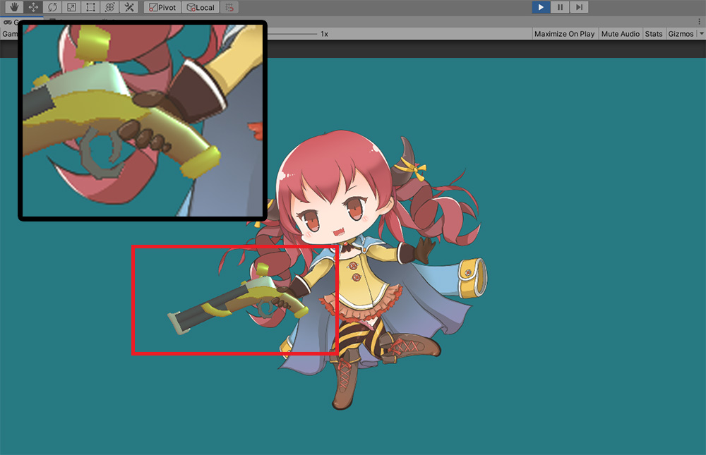

AnyPortrait > Manual > Attach Equipments
Attach Equipments
1.3.2
There is a function called Socket (Related page) to attach an external object to a character created with AnyPortrait.
This page explains how to use this feature to attach external objects, especially items such as weapons or equipment.

These are "Pirate girl character" of the demo scene and "the Gun" made as a 3D model.
Let's delete the existing gun that the character is currently holding, and make the girl character hold the 3D Gun instead.
Caution
On this page, we prepared a 3D model to show the difference, but it is better to have a Quad mesh or Sprite to which the 2D image is applied.
This is because there is a rendering issue that will be discussed below.

The first thing we need to do is set up socket.
(1) Select the bone of the right hand to which the weapon will be attached.
(2) Remember the bone's name, as you need to call that bone with a script.
(3) Activate the Socket property.

We will hide the existing gun mesh.
(This process is for creating this example, so you can be ignored.)
(1) In the Setting tab of the mesh group, (2) select the gun mesh and (3) turn off Visible.

Now prepare the weapon to be equipped.
We configured the weapon by setting the 3D mesh as a child of an empty GameObject.
The reason for this preparation is that the origin of the object must be the gun handle.
Also, since the bone is pointing in the Y-axis, make the gun look forward the Y direction.
Now let's write the script as below.
using UnityEngine;
using AnyPortrait;
public class WeaponEquipScript : MonoBehaviour
{
public apPortrait portrait;
public Transform gunTransform;
void Start()
{
//Set the character's right hand bone as the weapon's parent
Transform handBone = portrait.GetBoneSocket("Bone Hand R");
gunTransform.parent = handBone;
//Make the position and rotation the same as the socket, and check the sign of the local scale
gunTransform.localPosition = Vector3.zero;
gunTransform.localRotation = Quaternion.identity;
Vector3 gunScale = gunTransform.localScale;
if(gunScale.x < 0) { gunScale.x *= -1; }
if(gunScale.y < 0) { gunScale.y *= -1; }
gunTransform.localScale = gunScale;
}
}
You can get the Transform of the right-hand bone by using the GetBoneSocket function.
If you change the weapon's GameObject to be a child of the right hand bone's Transform and reset its local position, the weapon mesh will move with the movement of the right hand.

Apply the above script to the scene.
(1) Create a new GameObject.
(2) Add the created script to the added GameObject, and specify the Transforms of character and weapon respectively.

Let's run the game.
You can see the gun attached to the character's right hand and moving.
However, the rendering order of the guns is strange.
The gun should be in the character's hand, but now it's at the back of the character.

In order to specify the rendering order of the gun, we need to know the rendering order of the mesh, i.e. Sorting Order.
Open the AnyPortrait editor again.
(1) This character's right hand has palm mesh and finger mesh, and the gun positioned between them.
(2) Select the finger mesh of the right hand and (3) remember the Name of the mesh ("Hand R Finger").

Makes different Sorting Order be assigned according to the rendering order of the meshes.
(1) Press the Bake button.
(2) Click Settings tab.
(3) Change Sorting Order Option to Depth To Order, and increase Order Per Depth to 2.
Since we want the script to make the gun mesh's Sorting Order less than 1 for the finger mesh, the Sorting Order should be assigned at intervals of 2 or more to avoid duplicating the rendering order with other meshes.
Modify the script as below to set the Sorting Order.
using UnityEngine;
using AnyPortrait;
public class WeaponEquipScript : MonoBehaviour
{
public apPortrait portrait;
public Transform gunTransform;
public MeshRenderer gunMeshRenderer;
void Start()
{
//Set the character's right hand bone as the weapon's parent
Transform handBone = portrait.GetBoneSocket("Bone Hand R");
gunTransform.parent = handBone;
//Make the position and rotation the same as the socket, and check the sign of the local scale
gunTransform.localPosition = Vector3.zero;
gunTransform.localRotation = Quaternion.identity;
Vector3 gunScale = gunTransform.localScale;
if(gunScale.x < 0) { gunScale.x *= -1; }
if(gunScale.y < 0) { gunScale.y *= -1; }
gunTransform.localScale = gunScale;
//Set to render directly behind the finger mesh
int fingerSortingOrder = portrait.GetSortingOrder("Hand R Finger");
gunMeshRenderer.sortingOrder = fingerSortingOrder - 1;
}
}
This is a script that sets the Sorting Order of the MeshRenderer of the gun model to 1 smaller than the Hand R Finger of the character.

Added a MeshRenderer gunMeshRenderer variable to the script, so we assign the MeshRenderer of the gun mesh in the Unity editor.

Here's something to note.
By default, opaque materials with volume cannot control the rendering order with Sorting Order.
So, in this example, we need to change the rendering method of the 3D modeled gun to "Transparent".
The rendering of this model on a "Transparent" type of material can be a bit odd.
Therefore, it is recommended to create items with Quad meshes or Sprites using 2D images as-is.

When the game is executed, the rendering order is modified so that the character properly holds the gun properly.